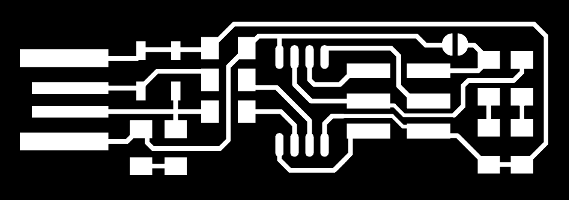

Week 4 - Make an in-circuit programmer by milling the PCB
Description
This week I will be making a ISP (In-system programming) or in-circuit programmer.
I chose to do Brian's ISP. I chose it for its simplicity and cost as it is striped down to a bare minimum of components.


The process will be split in phases, Milling, Stuffing/Populating, De-buging, Programing:
Milling
On this phase I will be using the following:
_ Mach3
_ The CNC
Fab Modules
- I started by downloading the Traces (1000 dpi) and Outline Cutout (1000 dpi) of the circuit provided at Brian's tutorial.


- At Fab modules
I selected the option "image (.png)"

I choose the image file

Once image is loaded I selected "output format" and then "G-codes (.nc)"

On Process I selected "PCB traces (1/64)"

Before calculating I changed the cut depth to 0.05, half of the default value as I was beeing a bit cautious on it.

Then pressed calculate

After calculation I proceed with a inspection of the toolpath to make sure that all traces were covered. By holding left mouse key I was able to move the image and with the wheel button I could zoom the image to better check the tool path.

By holding right mouse key I was able to even see it with a different perspective.

Last I saved the file for the milling process.


To outline I followed the same steps as before exept I chose to "PCB outline (1/32)" instead of traces.

2. Mach3
I started the preparation of the cnc by milling a pocket the size of the blank PCB (76x50x1.5mm)

Milling the pocket

Finished pocket

Gluing double face tape on the FR1 board

The end result is this.

Milling the cutout of one of the ISP's

Removing the PCB from the pocket.

I used a Xsato blade and sandpaper to remove shavings left from the milling process.

Removed the double face tape from behind the pcb.

3. Stuffing
Basing on Brian's ISP's page tutorial I started by creating a spreadsheet with the components and its positions.


|
Components |
Location |
Digikey or Mouser Part number |
Manufacture Part # |
|
- ATtiny45 or ATtiny85 |
U1 |
ATTINY45V-10SUR |
|
|
- 2x 1kΩ resistors |
R1, R6 |
RC1206FR-071KL |
|
|
- 2x 499Ω resistors |
R2, R5 |
RC1206FR-07499RL |
|
|
- 2x 49Ω resistors |
R3, R4 |
RC1206FR-0749R9L |
|
|
- 2x 3.3v zener diodes |
D1, D2 |
BZT52C3V3-7-F |
|
|
- 1x red LED |
D4 |
LTST-C150CKT |
|
|
- 1x green LED |
D3 |
LTST-C230TBKT |
|
|
- 1x 100nF/0.1uF capacitor |
C1 |
C1206C104KARACTU |
|
|
- 1x 2x3 pin header |
ISP |
71600-006LF |
After that I proceed soldering all components in place.
-3 Pre-Debugging
I started with a visual inspection.

OK I need to clean a bit more
That's when I realised I forgot to solder the jumper wire. That made me remove the shrink tube I had installed prior.

With the multimeter I looked for shorts and nothing was detected especially between Vcc and GND.
Overall the board seemed fine so I proceed with the programing. And now programing...
Programming
Under Ubuntu for Windows 10. Started by installing the programing environment

With the prior command the programs got downloaded.

I then downloaded the firmware source to a directory. Following that I run the command
make

Using Sublime-text I edited the makefile file and replaced the entry "PROGRAMMER ?= usbtiny" with "PROGRAMMER ?= usbasp".

I then run
make flash

But not success. So I run
lsusband I get a message “unable to initialize libusb: -99

After a quick search on stackoverflow I find out there is no support for usb under windows 10 ubuntu shell yet! Argh!

Then I gave up on Ubuntu bash for windows 10 and run a copy of Ubuntu under VMware player. At ubuntu I run:
sudo apt install avrdude gcc-avr avr-libc make

This time after running lsusb I can see that device is present.
I run
make
in order to compile the firmware.

I then run
make flash
But again I got an error message.
I end up finding out that my ISP has to have a jumper installed in order to program the Attiny45. So I do it!
And it works!

Next I run
make fuses

After having the firmware uploaded and fuses burnt my new ASP would not be recognised.
So back to debugging…
I end up measuring each resistor value, and replacing the attiny with a new one. With a multimeter I found out that the R1 1K resistor was not working, replaced and voila. Board detected!!! Oh also I decided to install a usb connector I cutted from an old cable and after some washing that's how it looks.


Final command make rstdisbl and this tiny can't be programed again.

It worked now I remove jumper!

It works!
-4 Final Test
Loading the driver on windows I use the tool "Zadig_2.2.exe"

After the driver installation I tested under windows the burning of my 3D printer board's firmware.

All working!